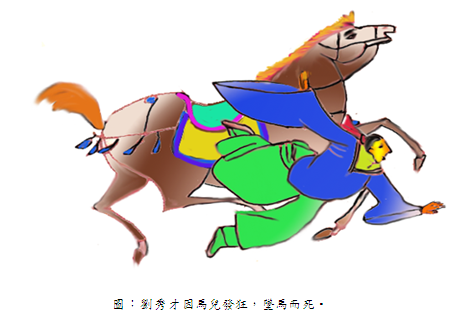

海瑞判案 江銘輝 五夢網
明朝嘉靖37年的某一天，正值夕陽西下，落日餘暉，斜照著雜草叢生的古道。雖然已到五月，但強勁的狂風仍然捲起陣陣滾滾黃沙，這時幾匹自滴答、滴答從遠處徐徐行來，為首是一位年級約四、五十歲，身穿藍布粗衫的中年人，他頭上戴著知縣烏紗帽，帽下一雙濃眉，瘦削的臉龐，獨具一對炯炯如炬的雙眼，使人不敢正視。跟隨在後的是龍、虎二位忠心耿耿、武藝高超的俠士。另外還有二位僕人，背著粗布包袱緊跟在後。
突然一陣馬蹄聲從遠處傳來，奔來一隊人馬，手揮刀劍和木棍，團團將海瑞一群人圍住。大聲嚇道：「狗官，納命來！」嚇得二位僕人手腳發軟。說遲時，那時快，嘶嘶馬聲突然寂寞了，黃沙也停止狂飆！為首的強盜首領，大聲喊道：「大家不得無禮，他是海瑞，海大人。」
海瑞就是這樣受到愛戴，連強盜都不敢傷他。他一生清廉、耿介，除正常微薄的五斗米薪俸外，其餘一文不取。他辦案如神，人人豎起大拇指稱讚。清官如海瑞者，終於在萬曆十五年死於南京儉都御史任內，享年74歲。有關海瑞的野史軼事眾多，特將之匯成曰：「海瑞萬曆十三年判案。」
一月判案--謀殺奇案（萬曆十三年判案）
六才子
萬曆年間，冬陽城有六位同年考上秀才的人，由於皆是同一位老師所教，感情特別好。於是相約每月十五日，在城裏悅賓樓聚會，吟詩作詞，共同切磋，城裏的人稱為六才子。這六人是劉宋詳、龔詩唐、林練武、巫賦漢、陳天文、虎曲元。可是他們之間卻相繼發生二件離奇怪事，六才子有二人死了，有人說是被謀殺，有人說只是意外死亡，議論紛紛，官方最終以非謀殺案，意外死亡結束案情。一天海大人在儉都御史府書房看書時，突然僕人帶來一個書生打扮年紀不到30歲的年青人，此人見了海瑞說：「海大人，小民叫劉宋詳，家住冬陽城內，拙荆名叫楊翠詞」，最近冬陽城六才子離奇死了二人，想大人必有所耳聞，雖然官方以非謀殺案件結案，但小民仍滿腹疑問和恐懼，怕自己也會有危險，因此請求大人保護小民。」海瑞說：「道底是什麼事？儘管說來，本大人一定保護你的生命。」劉秀才繼續説：「最近冬陽城發生二件離死亡案件，六才子中有二人死亡，官方的結論說是意外死亡，但依我的推論恐怕是謀殺案居多，理由是……。」
發現寶藏
海瑞道：「你有何理由說是謀殺案？」秀才回道：「這件事要從五年前說起，五年前有六個年輕人，由於在同一位老師教導下，又同年中秀才，因此特別要好，期望有一天也能再考上舉人，甚至登科成為進士，因此每月十五日在城裏悅賓樓聚會，共同切磋。」三年前的某一個春天，小民與六個人其中的三位，同遊黃山，我們四位共同發現一箱寶藏，大家異常興奮，有人提議均分，有人建議暫時埋在一個隱藏之處，最後認為大家還很年輕，應以考試為重，等將來功成名就，或急需時再取出使用。於是拿出一小部份發用，其餘寶藏則找一處隱密安全的地方埋妥，並繪製四張同樣的寶藏圖，約定，在寶藏未被取出均分之前，任何人不能洩露仍活著同夥人的名字，如果寶藏一直沒有被取出均分，則最後在世的人可得到全部寶藏。」
離奇死亡
劉秀才接著又說：「如此，四個人裝作人無任何事情發生一般，六位同窗仍然每月十五日聚會切磋學問，當然另外二位始終不知道此事。這樣平平安安過了二年，怪事終於發生了，去年十二月十五日的悅賓樓聚會時，我們之中的一位夥伴龔詩唐，大人也聽過，在酩酊大醉後，走到陽台上透透空氣，不知什麼原因，突然墜樓死亡，經過官方驗屍結果，認為是喝醉酒不慎失足死亡。但是仍有人不相信，街頭巷尾傳說是謀殺案，接著又有一位同窗，巫賦漢，也在這個月上旬在山間散步時，遭到山上落石擊中死亡，官方也認定是非謀殺的意外死亡，但小民認為是兇手有計劃的謀殺案，兇手只要將我們三個都殺死，就可得到所有寶藏，所以我擔心兇手下一個目標就小民，明天又是十五日了，我想兇手會在聚會上作出對小民不利的地方。請海大人務必暗中保護小民。」海瑞說：「保護人民是當官的責任，請放心明天我會暗中保護你。」
劉秀才之死

劉秀才拜辭海瑞後，愉快的騎上他的馬匹，沿著街道返家，突然馬匹發狂，亂奔狂跳。劉秀才非常驚慌，手足無措，大聲喊叫：「救命！」，但是馬匹奔走的是如此的快速，路上行人都不敢靠進，最後劉秀才墜馬而死，而馬匹再奔跑幾步後也倒地不起。有人向海瑞報告此事，海瑞帶龍、虎二衛士趕來，經官方檢驗結果，指出馬匹給人餵了一種發狂的毒藥，這種毒藥馬匹吃下後一個小時後就會發作，狂奔亂跳，最後倒地死亡。現在倒在地上的馬匹，跟書上記載的吃了這種藥馬匹的死亡一樣。
水落石出
「這顯然是被謀殺死亡！可惡！居然敢在我的管轄區作案，我一定查個水落石出。」海瑞喃喃地說。於是就去見劉秀才的妻子，想從口中查出兇手。秀才的妻子說：「小女子也恨不得馬上將兇手抓出，將他碎屍萬段，可是小女子實在真的不知道良人的合夥人到底是誰？只有一次他被我吵得煩死了，向我說：『親愛的！認真說起來，妳也是半個合夥人。』除此之外，他們之間的秘密，我一概不清楚。」
看情形，海瑞再問也沒有用，就打道回儉都御史府。一直在書房繼續思考案情。
第二天，海瑞一早就趕到六才子聚會的悅賓樓，查詢六才子聚會的時間和房間，然後就在房間的隔壁叫了小菜和龍、虎二衛士飲酒起來，靜待事情的發展。不久六才子（應該說三才子）像往常一樣來到，共同吟詩喝酒，就在大家酒酣耳熱之際，海瑞帶著龍、虎二衛士叫道：「你們之中哪一個叫虎曲元的。」；「我就是。」其中一位秀才答道。海瑞怒叫：「來人阿！將他抓起來，帶回審問，他昨天謀殺劉秀才。」虎秀才大聲喊道：「大人，冤枉阿！你怎麼把我抓起來，小民是無辜的，你怎麼肯定是我謀殺劉秀才。」私自喃喃自語道：「難道是那小子把我們之間的秘密全部抖出來。」
海瑞道：「本官已查出你就是謀殺劉秀才的兇手，將我抓回去審判就是。」
在回府途中，二位衛士不解道：「大人，你以前並不認識六才子，怎麼一口斷定，虎曲元就是兇手。難道他的臉上有兇殺犯的特徵嗎？」
海大人哈哈大笑，說：「當然沒有，在他拜訪劉太太回府後，對劉秀才給他太太的一句話備感興趣，即他對妻子說：『親愛的，認真說起，妳也是半個合夥人。』猜想這可能就是線索，我回到書房把這句話與六才子、劉太太的姓名一一比對，再三推敲，劉秀才果然是個讀書人，留一道謎題給他的太太。龔秀才的墜樓及巫秀才的被石頭碰死，官方的判斷都是正確，屬意外死亡。至於劉秀才則是當兇手看見四個合夥人中的二位，一個在酒店墜樓死亡、一個被山上的落石碰死，心生歹念，只要將剩下一位再殺死，寶藏就歸他所有，因此決心將他殺死。趁劉秀才來拜訪我時，給馬匹吃瘋狂藥，劉秀才因此墜馬死亡。至於兇手是誰？如果將前面死亡二位秀才及劉秀才及妻子四人的姓名和劉秀才的『妳也是半個合夥人』這句話連結在一起，不難推出兇手就是虎曲元。你再仔細想想，如果將前面二位死亡叫詩唐、賦漢的秀才，加上劉秀才『妳也是半個合夥人』的謎題，將夫妻二人的名字，丈夫劉宋詳的宋及妻子楊翠詞的詞，一一寫出，就是賦漢、詩唐、詞宋，如果再把這三句話，每句話前後顛倒，就變成漢賦、唐詩、宋詞，再加上元曲就是古時候所稱的四大韻文，而他們六才中剛好有一個叫曲元，所以我肯定兇手就是虎曲元。
【以上姓名都是虛構，如屬雷同，純屬巧合，敬請原諒。】